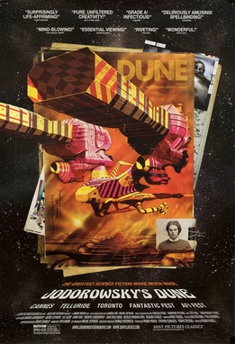

Frank Pavich
2013
90 minutes
TITLE: Jodorowsky's Dune TEXT PLACEHOLDER 120
This is an interesting documentary about the absolutely bonkers plans that Jodorowsky (of The Holy Mountain fame) had for making a film based on Frank Herbert's Dune. You were lucky enough to see the David Lynch version in the theater when you were a kid, though to say that this went way over your head was an understatement. Your uncle, who was a bit of a sci-fi nerd, dragged you and your cousin to it, in hopes it would be the next Star Wars. It was not. You were massively confused, and the sheet of paper with a Dune glossary they handed out to all the patrons beforehand did little to shed light on what the fuck was going on. You just remember a lot of grotesque imagery, which you would later revel in when returning to this as a teenager.
You generally have a very positive view of Jodorowsky. One of the funniest films you have ever seen is Jodorowsky-adjacent, and you and your belated wife were able to experience it live in Milwaukee. It was an Everything Is Terrible production, a clip-show full of horrifying found footage involving dogs with the title DoggieWoggiez! PoochieWoochiez!. The EIT bunch lovingly edited together this footage roughly in the form of a remake of Jodorowsky's The Holy Mountain. In particular, the middle section is devoted to dog footage in the theme of the seven other planets in the movie (e.g. weapons, art, toys, war, et cetera). It is one of the best remakes of a film you have ever seen, and you endlessly recommend it to anyone who will listen and might have the vaguest idea what the fuck you are talking about.
You also happen to be a huge fan of Jodorowsky's Metabarons comics, which were heavily influenced by Dune, and a lot of the DNA that formed these comics is on display in this documentary.
The documentary itself is, well, just a pretty-good documentary. But there is enough here that indulges your perverse interests to keep you tuned in and attentive.
Time to choose something different: